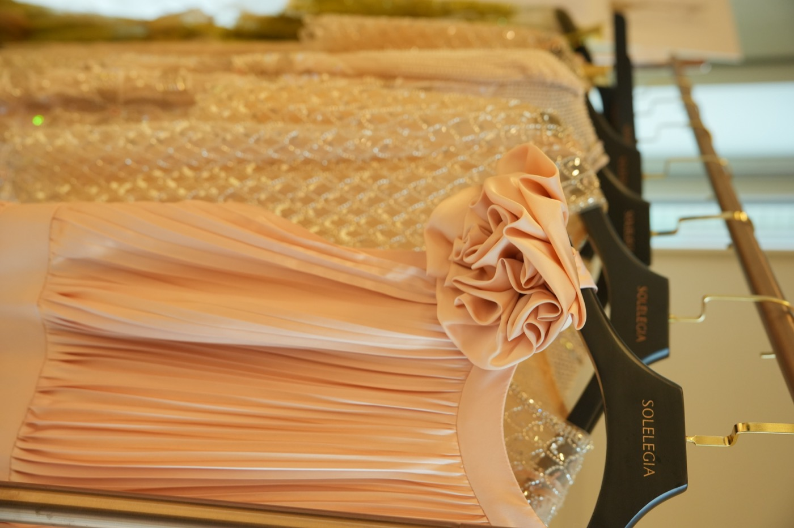
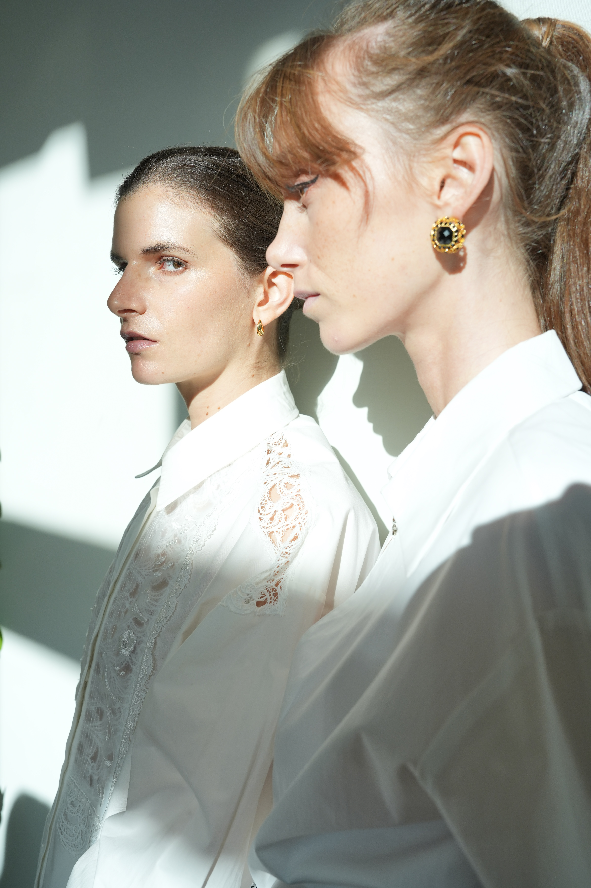
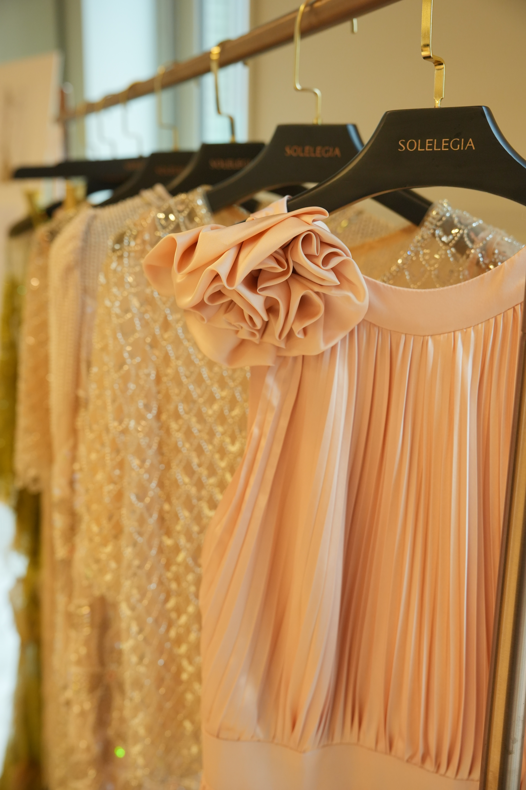
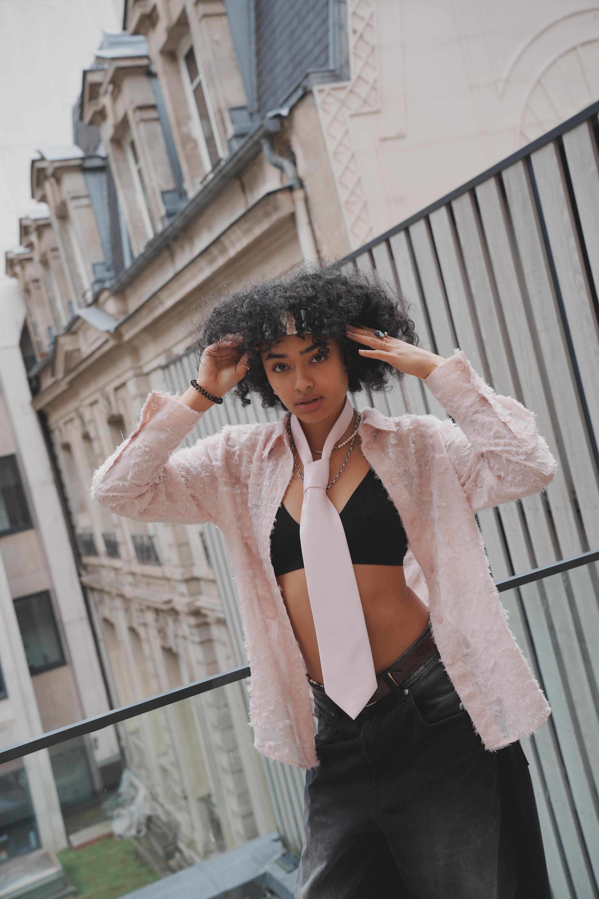
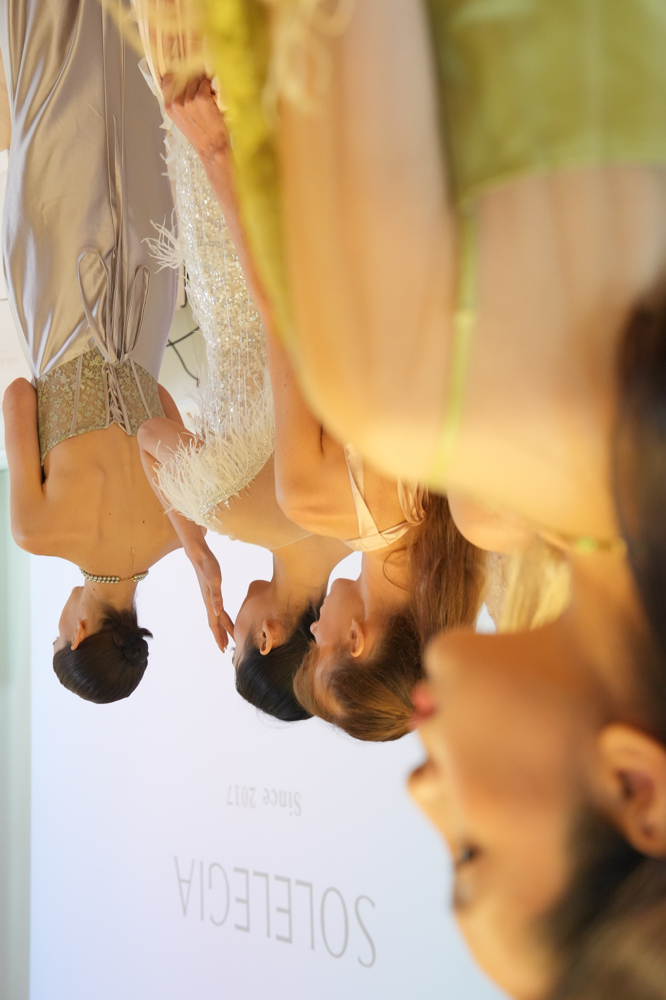

A quiet Paris debut where garment, body, light, and cultural memory were allowed to speak without spectacle.
一个来自东方的高定品牌，第一次在巴黎亮相。不是以迎合的姿态，而是以自身文化语言的完整性，寻找与西方审美的真实对话。
A debut — which is to say, an act of translation and of courage. The question that shaped everything: how does a brand speak, for the first time, in a city that has its own very particular vocabulary for fashion?
SOLELEGIA came to Paris not to imitate the existing grammar of haute couture, but to introduce a parallel one — one rooted in Eastern textile traditions, in a different relationship between the body and cloth, in a philosophy of making that the brand had been developing quietly for years.
The strategic challenge was to create a launch that would register as culturally literate to a French audience without becoming a cultural performance. The distinction matters: one is conversation, the other is pantomime.
战略挑战是创造一场对法国观众来说具有文化素养的发布会，而不会变成一场文化表演。这种区别很重要：一个是对话，另一个是哑剧。SOLELEGIA来到巴黎，不是为了模仿现有的高定语法，而是为了引入一种平行的语言——植根于东方纺织传统，在身体与布料之间有着不同的关系。
The brand strategy began not with positioning statements or competitive analysis, but with a sustained conversation about what SOLELEGIA believed — about the body, about time, about the relationship between luxury and restraint.
From this, a set of curatorial principles emerged that shaped everything from the invitation design to the spatial arrangement of the presentation to the music and the quality of light. Nothing was accidental. Everything was quiet.
The presentation format was deliberately intimate — a small gathering of carefully selected guests, a single space, a sequence of looks that told a story without narration. No press release was distributed on the day itself. The work was allowed to circulate on its own terms.
品牌战略不是从定位陈述或竞争分析开始的，而是从一场关于SOLELEGIA信念的持续对话开始——关于身体、时间、奢侈与克制之间的关系。从这里，一套策展原则浮现，它塑造了从邀请函设计到展示的空间安排，到音乐和光线质量的一切。没有什么是偶然的。一切都很安静。
To dress a room the way you would dress a person — with intention, restraint, and an understanding of what the occasion requires.
The venue was chosen for its quality of light — a Paris espace that in the afternoon receives a particular quality of natural illumination that no artificial lighting fully replicates. The presentation was scheduled to coincide with this window.
Seating was arranged to create an intimate spatial relationship between the garments and the guests — not a runway, but a proximity. Guests were close enough to see the weight of the fabric, the small decisions in construction, the places where the hand of the maker was still visible.
The music was a single continuous piece composed for the occasion — neither Western classical nor recognizably Eastern, but something that occupied the space between the two.
场地因其光线质量而被选中——一个巴黎空间，在下午接受一种任何人工照明都无法完全复制的特殊自然光。展示被安排在与这个时间窗口重合的时候。座位的安排创造了服装与宾客之间亲密的空间关系——不是走秀台，而是一种接近。宾客足够近，可以看到织物的重量、制作中的小决定、制作者的手仍然可见的地方。




Selected documentation · SOLELEGIA Collection Launch · Paris, 2024
The beginning of a conversation between two aesthetic traditions — conducted not through argument, but through the quality of making.
The launch positioned SOLELEGIA within Paris's cultural landscape not as an imported product seeking validation, but as a creative voice that had arrived with something genuinely to contribute. This is a different kind of market entry — slower, less visible in the short term, more durable.
The lasting note of the project was not the glamour of arrival, but the discipline of restraint: garments close enough to be read by hand, a room quiet enough for detail to become language.
这场发布真正留下的，不是“进入巴黎”的姿态，而是一种克制的纪律：让服装靠近身体，让细节靠近观看，让东方审美不通过解释证明自己，而通过制作的质量自然成立。